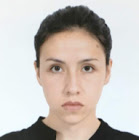

M. Catalina Torres
Set theory Infinite combinatorics

About me
I’m a PhD candidate in Mathematics and Computer Science at the University of Barcelona, my PhD advisor is Joan Bagaria. I’m based in Vienna, where I’m a project assistant in the Computational Logic group at TU Wien under the supervision of Juan Aguilera.
My research is in set theory. I study higher stationarity on two cardinals, how stationary sets reflect, and how these questions connect to large cardinals and to topology.
Education
- Present
PhD in Mathematics and Computer Science
University of Barcelona, Spain
Thesis: Infinite Combinatorics on 𝒫κ(λ). Advisor: Joan Bagaria Pigrau.
- 2022
Master’s in Pure and Applied Logic
University of Barcelona, Spain
Thesis: Stationary Reflection on 𝒫κ(λ). Advisor: Joan Bagaria Pigrau.
Bachelor’s in Mathematics
National University of Colombia, Bogotá
Thesis: Knot Classification through Counting Finite Group Homomorphisms. Advisor: Mauricio López Hernández.
Research stays
- Vienna, 2025–present. I first visited TU Wien in 2025 with the support of an Ernst Mach Grant worldwide. I continue to work with Juan Aguilera as a research assistant in the Computational Logic group.
- Tokyo, 2025. I visited the University of Tokyo twice to work with Hiroshi Sakai on our joint project.
- Hamburg, 2025. I visited the University of Hamburg and collaborated with Professor Philipp Lücke.
- Kobe, 2023. I visited Kobe University and collaborated with Professor Hiroshi Sakai.
Publications & preprints
- 2026 · Preprint
On 2-stationarity of 𝒫κλ
Hiroshi Sakai and M. Catalina Torres · arXiv:2607.16563
- 2024 · Revised 2025
Higher stationarity and derived topologies on 𝒫κ(A)
M. Catalina Torres · Accepted for publication in the Israel Journal of Mathematics.
- 2024 · Proceedings
Hyperstationary subsets of 𝒫κλ
M. Catalina Torres · Large Cardinals and the Continuum, RIMS Kôkyûroku, vol. 2290.
Selected talks
- 9 September 2026 · Vienna
Menas Theorem and Strong Compactness on Pκ(λ)
FLINTA* in Set Theory, Erwin Schrödinger International Institute.
- 2 June 2026 · Bogotá
Large Cardinals and Derived Topologies
Simposio Latinoamericano de Lógica Matemática, Universidad de los Andes.
- 20 May 2026 · Helsinki
High Stationarity on Pκ(λ) and Strong Compactness
European Set Theory Conference, University of Helsinki.
Earlier talks
- Reflecting Stationary Sets on Two Cardinals · TU Wien, March 2026.
- Strong Compactness and 2-stationary sets of Pκ(A) · Waseda University, July 2025.
- Characterising Hyper-stationary Sets on Pκ(A) · Kobe University, May 2025.
- A Topological Approach to Characterising Hyper-stationary Sets on Pκ(A) · CUNY Graduate Center, April 2025.
Contact
You can reach me at mactorrespa@gmail.com.